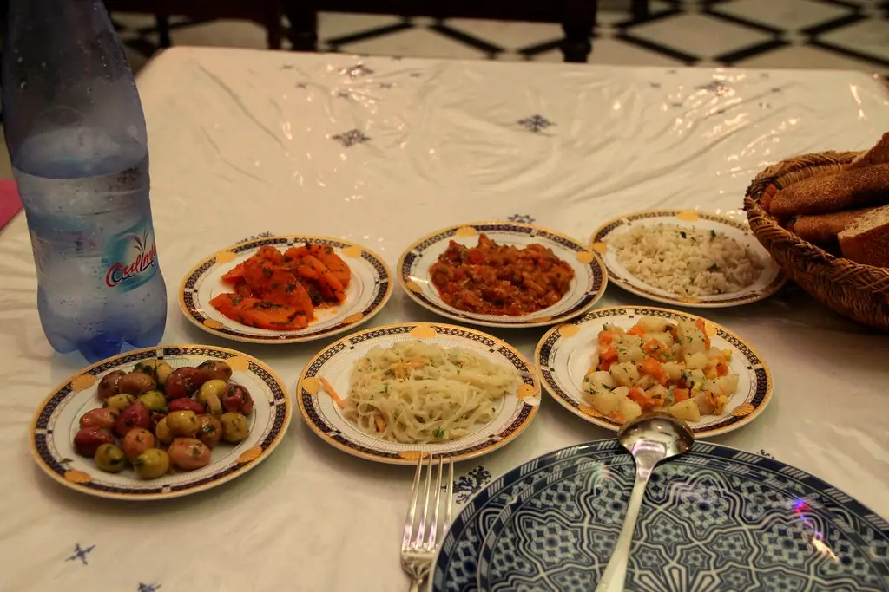

La carte
Cuisine du marché, recettes de famille
Carte de saison. Prix en dirhams, service compris.
Une allergie ? Dites-le-nous en réservant.

La carte
Carte de saison. Prix en dirhams, service compris.
Une allergie ? Dites-le-nous en réservant.